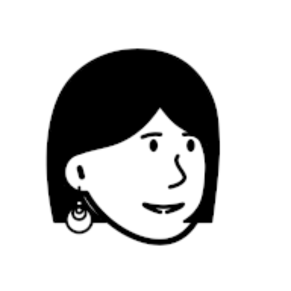

Products · essays · small experiments
I make products
and write about
what I notice.
I like unclear problems. I care about useful details. I test ideas to see what works.
Based in the Netherlands
01 / Personal product
TRACE
TRACE helps people clear their head. It records small signs of progress and keeps the data on the device.
- Focus
- Product design
- Principle
- Evidence over judgement
- Stage
- Working prototype
View TRACE on GitHub
00:42
先让今天停在这里
把还在脑中的事轻轻放下。
09:12TRACE•••
MORNING START
今天想往前推一点的事是什么？
今天的锚点完成最重要的一步
开始今天
02 / Creative infrastructure
Creative Graph
Creative Graph finds links between ideas that are easy to miss. Every result shows the path and score behind it.
- Built with
- Python · FalkorDB · MCP
- Principle
- Visible paths, not black boxes
- Release
- v0.1.1
Explore Creative Graph
video
memory
travel
place
identity
RELEVANCE0.86
COHERENCE0.79
SURPRISE0.64
Ranking stays visible.
No hidden model call.
About me
A little about me
I live in the Netherlands. My work sits between products and technology.
I enjoy unclear problems and small teams. Outside work I write essays and fiction.
Read more about me
- Based in
- The Netherlands
- Focus
- Products and people
- Also
- Essays and fiction